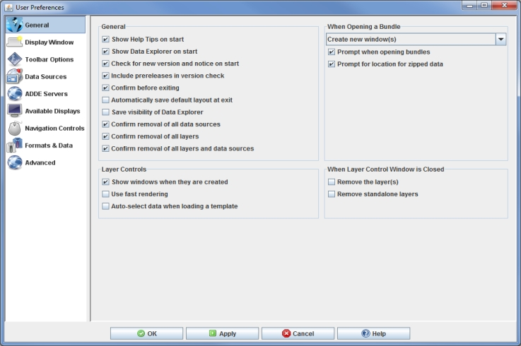

General Preferences
The User Preferences window is accessed in the Main Display window through the Edit->Preferences menu. The General tab allows the user to configure many of the general settings within McIDAS-V. The image below represents the default settings for the General tab.

Image 1: General Preferences (Default)
General
- Shows McIDAS-V system bundles - Includes the Current WX System Bundles on the Main Toolbar of the Main Display window. These are bundles that are designed to show some general features of McIDAS-V.
- Show Help Tips on start - Displays the help tip window on start up.
- Show Data Explorer on start - Opens the Data Explorer window when McIDAS-V starts.
- Check for new version and notice on start - Checks at startup to see if the current version of McIDAS-V is up to date and checks for important notices from SSEC.
- Include prereleases in version check - Checks at startup to see if there is an updated prerelease version ready for download.
- Confirm before exiting - Asks the user to confirm before the exiting McIDAS-V.
- Automatically save default layout at exit - Stores the position of the Data Explorer for the next session.
- Save visibility of Data Explorer - Stores the visibility of the Data Explorer for the next session.
- Confirm removal of all data sources - Asks the user to confirm before removing all data sources.
- Confirm removal of all layers - Asks the user to confirm before removing all layers.
- Confirm removal of all layers and data sources - Asks the user to confirm before removing all layers and data sources.
When Opening a Bundle
- How to open bundle - Determines how the bundle will open. The dropdown list contains four options
for opening bundles: Create new window(s), Merge with active tab(s), Add new tab(s)
to current window, and Replace session.
- Prompt when opening bundles - Opens a window asking
how to open the bundle, allowing for the user to choose each time
a bundle is opened.
- Prompt for location for zipped data - Allows for specifying
a directory to place zipped data files, or choose to create a temporary directory.
Layer Controls
- Show windows when they are created - Specifies that when a display is created its control window is automatically shown.
- Use fast rendering - Uses fast rendering
to display data layers (images, contours, etc.); see Performance
Tuning for more information. A separate fast rendering option for
map layers is available in the Map
Controls.
- Auto-select data when loading a template - Auto-selects the data when loading in a display template bundle. A display template is created in the Layer Controls tab through the Save Display as Favorite menu item. Note that display templates don't store the data, so in order to load in a display template bundle, the data must first be added by the user. When this option is turned off, a Field Selector window will appear when loading a display template bundle that allows for the selection of a field to display. When the option is turned on, the same field that was displayed when the display template was created will be automatically selected and displayed. Note that this option does not impact a user when selecting a display template through the Displays panel of the Field Selector.
When Layer Control Window is Closed
- Remove the layer(s) - Specifies that when a display's window
is closed then the layer itself is removed.
- Remove standalone layers - Removes the layer when the window is closed for a
standalone layer (i.e., one that does not have a display component in the Main Display window).